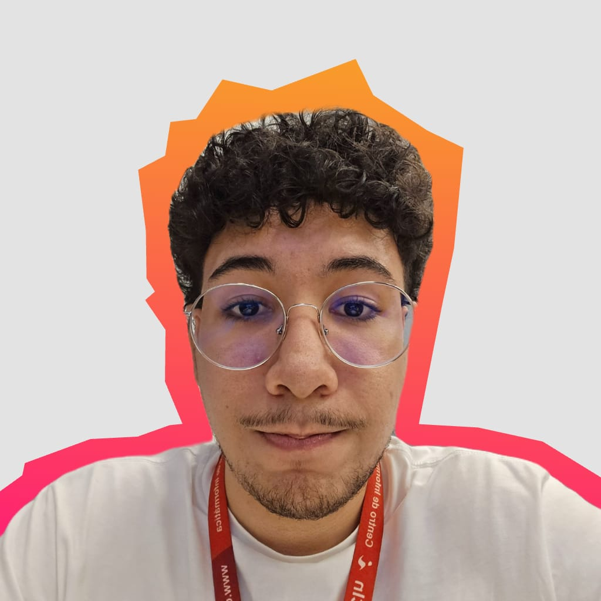
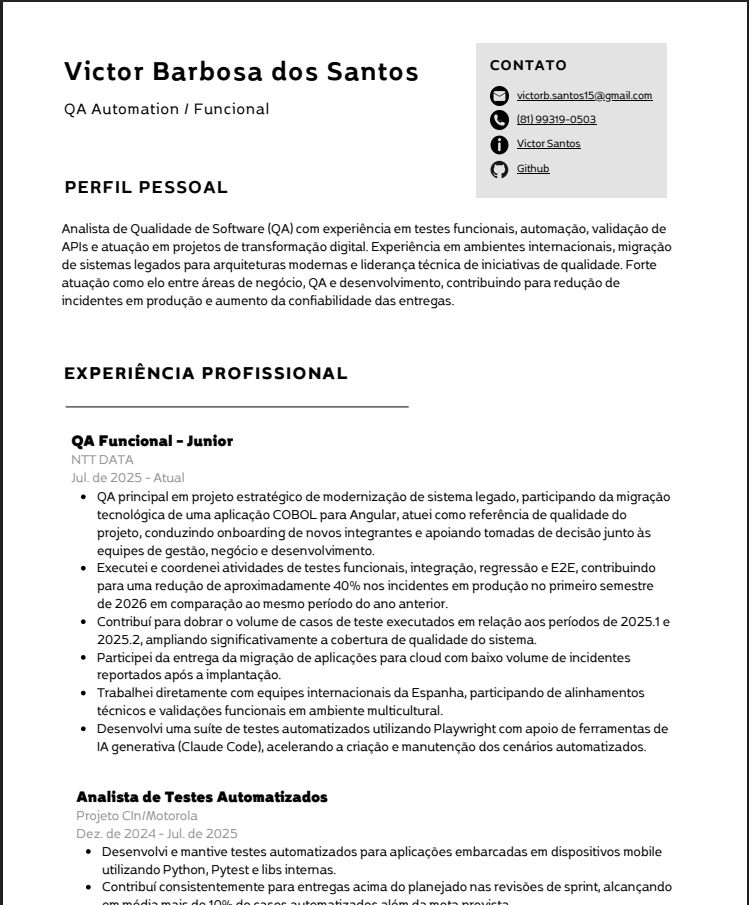
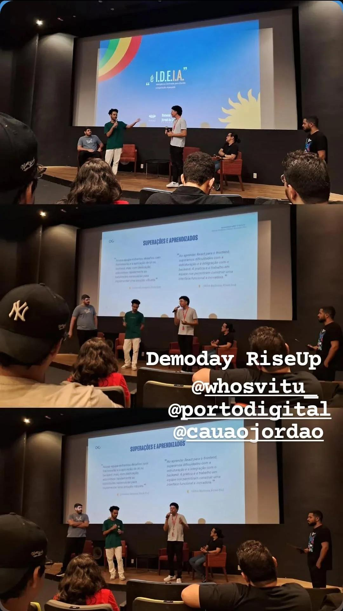
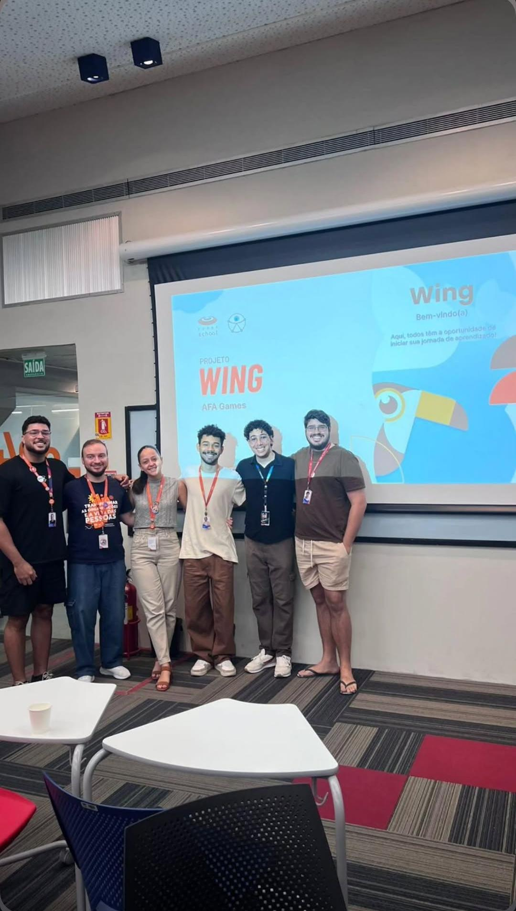
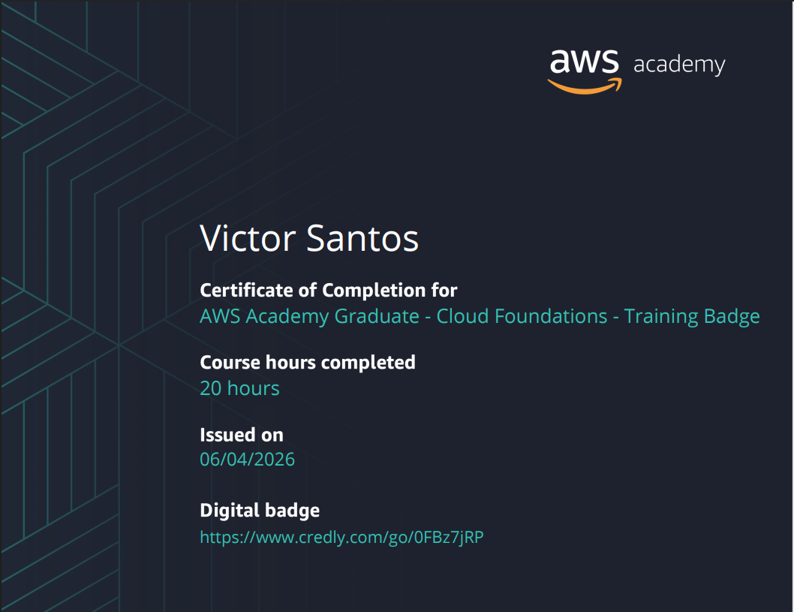

Desenvolvedor Web
Victor Barbosa dos Santos
Análise e Desenvolvimento de Sistemas - 5º Período
Sou um desenvolvedor web apaixonado por tecnologia e inovação. Busco constantemente aprender novas ferramentas e técnicas para criar soluções digitais eficientes e criativas. Iniciei na área de tecnologia em 2021, quando ingressei na ETE Porto Digital e cursei o técnico de Desenvolvimento de Sistemas. Atualmente trabalho como QA na empresa NTT Data e como Head de Desenvolvimento Mobile no projeto Wing.
Busco oportunidades na área de desenvolvimento web ou mobile, com foco em criar experiências digitais inovadoras. Tenho interesse em trabalhar com metodologias ágeis e equipes multidisciplinares.
Me vejo como um profissional em migração, que ainda busca uma oportunidade para aplicar os conhecimentos que cultivei na área desejada. Tenho grande conhecimento na minha área atual de trabalho, mas não é o meu foco para o futuro.
Aqui transformo reflexão em direção: penso em que tipo de profissional quero me tornar e quais competências preciso construir para isso.
Meu objetivo é me tornar um desenvolvedor de software com foco em aplicações web e mobile, participando não apenas da implementação, mas também das decisões técnicas dos projetos. Quero construir uma carreira que una desenvolvimento, qualidade de software e visão de produto, contribuindo para soluções que realmente resolvam problemas dos usuários.
As áreas que mais despertam meu interesse atualmente são desenvolvimento Front-end, desenvolvimento Mobile e Inteligência Artificial. Gosto da possibilidade de transformar ideias em produtos visíveis para os usuários e também tenho interesse em entender como a IA pode ser aplicada para gerar soluções mais eficientes e acessíveis.
Para alcançar meus objetivos, preciso aprofundar meus conhecimentos em arquitetura de software, cloud computing e desenvolvimento mobile em escala. Também quero evoluir em liderança técnica, comunicação profissional e tomada de decisão em projetos mais complexos.
O principal obstáculo hoje é a falta de experiência profissional direta como desenvolvedor. Apesar de atuar na área de tecnologia como QA e participar de projetos de desenvolvimento, ainda busco uma oportunidade que me permita atuar diariamente como desenvolvedor e acelerar minha evolução técnica.
Por que isso é importante: Conforme avanço na graduação e participo de projetos mais complexos, percebo que saber programar não é suficiente. Entender arquitetura é essencial para criar soluções escaláveis e de fácil manutenção.
Como isso impacta minha trajetória: Esse conhecimento me aproxima do perfil profissional que desejo construir e aumenta minha capacidade de contribuir em decisões técnicas importantes.
Como pretendo começar a desenvolver: Estudando padrões arquiteturais, analisando projetos reais e aplicando esses conceitos nos projetos acadêmicos e pessoais que desenvolvo.
Por que isso é importante: Atualmente atuo como Head de Desenvolvimento Mobile no projeto Wing e vejo nessa área uma oportunidade de crescimento profissional alinhada aos meus interesses.
Como isso impacta minha trajetória: Quanto maior minha experiência prática, maior será minha capacidade de assumir responsabilidades técnicas e conquistar oportunidades na área de desenvolvimento.
Como pretendo começar a desenvolver: Participando ativamente das decisões do projeto, estudando boas práticas de desenvolvimento mobile e criando aplicações próprias para ampliar meu portfólio.
Nesta etapa coloco em prática pelo menos uma ação concreta ligada ao meu desenvolvimento profissional, registrando todo o processo e suas evidências.
Durante este período realizei uma revisão completa do meu currículo, organizei meus projetos no GitHub e atualizei minhas informações profissionais para que refletissem melhor minha experiência atual como QA na NTT DATA e Head de Desenvolvimento Mobile no projeto Wing.
Escolhi essa ação porque percebi que muitas das minhas experiências não estavam sendo apresentadas da melhor forma. Melhorar minha apresentação profissional é um passo importante para conquistar oportunidades na área de desenvolvimento.
O processo me fez revisitar minha trajetória desde a ETE Porto Digital até a CESAR School. Também me ajudou a identificar pontos fortes que eu costumava considerar comuns, mas que representam diferenciais importantes para minha carreira.
Percebi que acumulei mais experiências do que imaginava, principalmente por atuar simultaneamente em ambiente corporativo, projetos acadêmicos e projetos extracurriculares. Também identifiquei lacunas que preciso preencher para me aproximar do perfil profissional que desejo.
Eu teria começado a construir meu portfólio e registrar minhas experiências de forma mais consistente desde os primeiros períodos da faculdade. Isso facilitaria demonstrar minha evolução profissional ao longo do tempo.

Percebi que consigo aprender rapidamente quando tenho contato prático com uma tecnologia. Também notei que me sinto mais motivado quando estou desenvolvendo soluções do que apenas estudando conceitos de forma isolada.
Tenho adiado o aprofundamento em arquitetura de software por ser um tema mais complexo e abstrato do que desenvolvimento tradicional. No entanto, reconheço que esse conhecimento será necessário para meu crescimento profissional.
A gestão do tempo continua sendo a dificuldade mais recorrente. Conciliar faculdade, trabalho, projetos paralelos e estudos exige uma organização que ainda estou aperfeiçoando.
Hoje consigo enxergar uma evolução significativa na minha capacidade de resolver problemas, aprender novas tecnologias e participar de projetos com mais autonomia do que nos primeiros períodos da graduação.
Aqui reúno os principais projetos, entregas e experiências que marcaram minha trajetória ao longo do curso. (Substitua os textos abaixo pelas suas experiências reais.)
Ao longo da graduação tive a oportunidade de participar de projetos acadêmicos, iniciativas extracurriculares e experiências profissionais que contribuíram diretamente para meu desenvolvimento técnico e pessoal. Abaixo estão algumas das experiências que considero mais relevantes na minha trajetória.
Objetivo: Desenvolver uma solução voltada para facilitar o acesso de microempreendedores e pequenas empresas às oportunidades publicadas no Portal Nacional de Contratações Públicas (PNCP), reduzindo a complexidade do processo de busca e acompanhamento de licitações.
Contexto: O projeto foi desenvolvido como Projeto Integrador da CESAR School, envolvendo uma equipe multidisciplinar responsável pelo planejamento, desenvolvimento e validação da solução.
Minha participação: Atuei como líder da equipe e também como responsável pelo desenvolvimento mobile. Além de participar das decisões técnicas do projeto, acompanhei a organização das atividades, definição de prioridades e alinhamento entre os integrantes da equipe.
Problemas enfrentados: Um dos principais desafios foi equilibrar as atividades de gestão com as responsabilidades técnicas do desenvolvimento. Também enfrentamos desafios relacionados à integração de funcionalidades, definição de requisitos e adaptação das entregas ao cronograma da disciplina.
Aprendizados: O projeto fortaleceu minhas habilidades de liderança, comunicação e organização. Também me permitiu aprofundar conhecimentos em desenvolvimento mobile, trabalho em equipe e tomada de decisões em um projeto com escopo real.
Objetivo: Desenvolver uma solução tecnológica para otimizar o tempo de criação de matérias jornalísticas com assuntos relevantes e novos através da IA integrada ao processo de redação e ao Google Trends.
Contexto: O projeto foi realizado em equipe durante a graduação e exigiu a aplicação prática de conhecimentos relacionados a desenvolvimento de software, levantamento de requisitos e organização de entregas.
Minha participação: Atuei diretamente no desenvolvimento da aplicação, contribuindo para implementação das funcionalidades, estruturação do projeto e resolução de problemas técnicos encontrados durante o processo. Além disso, fui responsável pela liderança da equipe de frontend.
Problemas enfrentados: Tivemos desafios relacionados à definição de requisitos, divisão de responsabilidades e adaptação da solução às limitações de tempo e escopo do projeto.
Aprendizados: A experiência reforçou minha capacidade de trabalhar em equipe, desenvolver soluções sob restrições reais e transformar requisitos em funcionalidades utilizáveis.
Objetivo: Garantir a qualidade dos sistemas desenvolvidos por meio da execução de testes, validação de funcionalidades e identificação de possíveis problemas antes da entrega aos usuários.
Contexto: Atuo profissionalmente na NTT DATA como QA, participando de projetos corporativos que exigem organização, comunicação entre equipes e atenção aos detalhes.
Minha participação: Sou responsável pela execução de testes funcionais, validação de requisitos, registro de defeitos e acompanhamento das correções realizadas pela equipe de desenvolvimento. Também participo de alinhamentos e discussões relacionadas à qualidade das entregas.
Problemas enfrentados: Lidar com prazos reduzidos, grande volume de funcionalidades e diferentes cenários de teste exige organização e capacidade de adaptação constante.
Aprendizados: A experiência ampliou minha visão sobre o ciclo de desenvolvimento de software, fortaleceu minhas habilidades analíticas e me ensinou a enxergar produtos de forma mais crítica e orientada à qualidade.
Objetivo: Desenvolver uma funcionalidade que permitisse aos usuários acompanhar atualizações importantes relacionadas às oportunidades monitoradas pela plataforma através de notificações push e mensagens no aplicativo.
Contexto: Esta entrega faz parte da evolução contínua do aplicativo mobile do LicitaFácil, buscando melhorar a experiência do usuário e ampliar o valor entregue pela solução.
Minha participação: Atuei no desenvolvimento da funcionalidade mobile, participando da implementação da interface, definição dos fluxos e integração com as demais funcionalidades do aplicativo.
Dificuldades: Foi necessário alinhar requisitos, garantir uma boa experiência de uso e manter compatibilidade com a estrutura já existente do projeto.
Aprendizados: Essa entrega reforçou minha experiência com desenvolvimento mobile, evolução incremental de produtos e colaboração em equipe durante ciclos curtos de desenvolvimento.
Reúno aqui evidências reais do que vivi ao longo do curso de ADS. Cada item traz contexto, minha participação e o aprendizado relacionado.

Contexto: Demoday do RiseUp ocorrido no segundo período do curso.
Minha participação: Fui responsável por apresentar o projeto desenvolvido durante o período.
Aprendizado: Desenvolvi habilidades de comunicação e apresentação de projetos.

Contexto: Apresentação do projeto Wing ocorrida no quarto período do curso.
Minha participação: Fui responsável por apresentar o projeto desenvolvido durante o período.
Aprendizado: Desenvolvi habilidades de comunicação e apresentação de projetos.

Contexto: Certificação obtida após a conclusão do curso de fundamentos da AWS.
Minha participação: Concluí o curso e obtive a certificação.
Aprendizado: Aprofundei meu conhecimento sobre os serviços da AWS e sua aplicação em soluções de cloud computing.
Um olhar mais aprofundado sobre quem eu era e quem estou me tornando ao longo da faculdade.
A principal mudança foi a forma como enxergo a tecnologia. Antes meu foco estava apenas em aprender ferramentas e linguagens. Hoje consigo compreender melhor como a tecnologia resolve problemas reais e gera valor para usuários e empresas.
Minha principal dificuldade foi equilibrar estudo, trabalho e desenvolvimento pessoal. Em vários momentos precisei aprender a priorizar atividades e administrar melhor meu tempo.
Além de competências técnicas relacionadas ao desenvolvimento de software, comecei a desenvolver liderança, comunicação profissional e responsabilidade em projetos com impacto real.
Preciso aprofundar conhecimentos em arquitetura de software, cloud computing e desenvolvimento mobile avançado, além de fortalecer meu networking profissional.
Costumo assumir uma postura colaborativa e participativa. Quando necessário, também assumo responsabilidades de liderança para ajudar na organização das atividades e no cumprimento dos prazos.
Aprendi que competência técnica sozinha não garante bons resultados. Comunicação clara, organização e comprometimento são fatores fundamentais para o sucesso de qualquer projeto em equipe.
Reflexão sobre meus próximos passos profissionais, com foco em atuação no mercado tradicional.
Pretendo atuar principalmente com desenvolvimento de software, com foco em aplicações web e mobile. Também tenho interesse em acompanhar a evolução da Inteligência Artificial e explorar formas de integrá-la aos produtos que desenvolvo.
Tenho interesse em trabalhar em empresas que valorizem aprendizado contínuo, colaboração e crescimento profissional. Ambientes que utilizem metodologias ágeis e incentivem inovação chamam especialmente minha atenção.
Uma reflexão final que conecta minha trajetória acadêmica, desenvolvimento profissional, o Projeto Integrador, minhas soft skills e meus aprendizados pessoais.
Quando iniciei minha trajetória na área de tecnologia, ainda estava descobrindo quais caminhos seguir. Meu foco era aprender programação e entender como funcionava o desenvolvimento de software, sem ter uma visão clara sobre minha carreira.
Ao longo da graduação e das experiências profissionais que tive, passei a compreender melhor minhas áreas de interesse e os conhecimentos necessários para alcançar meus objetivos. Projetos acadêmicos, atuação como QA e participação no Wing contribuíram diretamente para esse amadurecimento.
Desenvolvi competências técnicas relacionadas a desenvolvimento e qualidade de software, além de habilidades comportamentais como comunicação, colaboração, liderança e adaptação a novos desafios.
Hoje tenho como principal objetivo consolidar minha transição para a área de desenvolvimento, construir uma carreira sólida em software e continuar evoluindo tecnicamente sem perder a curiosidade e a vontade de aprender que me trouxeram até aqui.
Olá, Victor do futuro,
Espero que você tenha conseguido conquistar o espaço que buscava na área de desenvolvimento e que continue mantendo a mesma vontade de aprender que teve durante toda a graduação. Lembre-se de que muitos dos resultados que você alcançou começaram em momentos simples: estudando após o trabalho, participando de projetos da faculdade e insistindo mesmo quando o progresso parecia lento.
Se hoje você alcançou seus objetivos, não esqueça do caminho percorrido. Continue evoluindo, ajudando outras pessoas e buscando novos desafios. Ainda existe muito para aprender.
— Victor do passado. (2026)